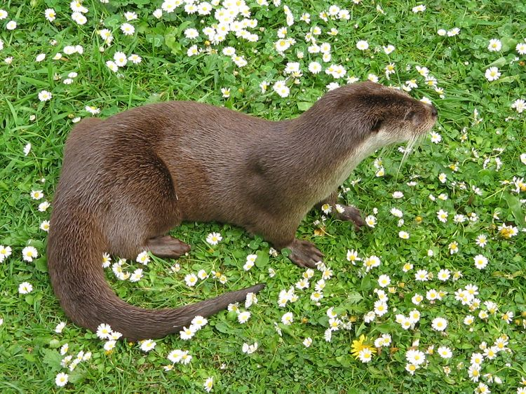
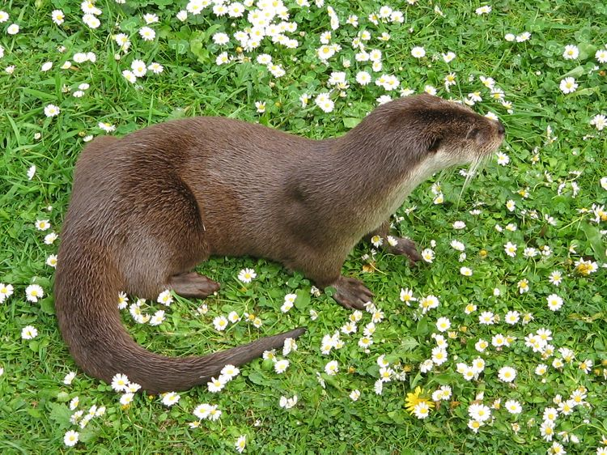

수달

물에서 헤엄치면서 물고기를 주로 잡아먹는 족제비과 수달아과로 분류되는 포유류의 총칭. 좁게는 수달류의 모식종이자 국내 서식종인 유라시아수달(Eurasian otter, Lutra lutra)만 뜻한다.
[데일리안 = 장정욱 기자] 국립공원공단은 장난치는 수달 등 다양한 멸종위기 야생생물의 희귀한 모습을 국립공원 무인관찰카메라로 포착했다고 8일 밝혔다.
이번에 무인관찰카메라가 포착한 영상은 지난해 4월부터 올해 8월까지 멸종위기 야생생물Ⅰ급인 수달을 비롯해 Ⅱ급 담비와 삵①, 흰목물떼새② 등의 모습이다.
국립공원공단은 “지리산, 경주, 가야산, 덕유산, 무등산국립공원 일대 멸종위기 야생생물 관찰 과정에 무인관찰카메라 8대에서 이들 야생동물 서식 장면을 잇달아 확인했다”고 설명했다.
지리산에서는 수달 2마리와 담비 3마리, 삵 2마리 모습을 포착했다. 수달 성체 2마리가 수상쉼터에서 장난치는 모습이 올해 4월 지리산 일대에 설치된 무인관찰카메라에 찍혔다.
먹이를 찾아 무리 생활하는 담비 모습은 올해 2월과 4월 지리산 구례군에서 포착했다. 담비는 잡식성으로 쥐, 토끼 등 포유류를 비롯해 새, 나무 열매 등 다양한 먹이를 먹으며 국립공원 생태계에서 최상 포식자로 군림하고 있다.
지난해 7월에는 어미 삵이 새끼에게 젖을 물리는 희귀한 장면도 지리산 산청군 한 습지에서 포착했다. 삵은 일반적으로 3월경에 짝짓기를 하고 60일 정도 임신 기간을 거쳐 새끼 2~3마리를 낳는 야행성 동물이다.
경주, 가야산, 덕유산, 무등산에서도 담비, 수달, 삵, 흰목물떼새의 모습을 포착했다. 경주 토함산지구에서는 지난해 4월 담비 2마리와 삵이 서로를 경계하는 모습과 수달이 양서류로 추정되는 먹이를 잡아먹는 모습을 촬영했다.
가야산 합천군에서는 올해 6월에 담비 2마리가 통나무에 엉덩이를 문지르는 행동을 포착했다. 이는 야생동물 고유 체취를 자연물에 묻혀서 다른 동물에게 본인 존재를 알리고 영역을 표시하는 형태다.
또한 덕유산 무주군에서는 올해 1월과 4월 계곡 바위 위에서 수달 가족들이 무리를 지어 가는 모습과 서로 장난치는 모습 등 가족 단위 생활을 하는 수달의 좀처럼 보기 힘든 장면도 포착됐다.
이외에도 올해 3월부터 4월까지 무등산 무인관찰카메라에서 흰목물떼새 짝짓기부터 새끼 부화 모습까지 포착했다. 7월에는 무등산 북산 일원에서 먹이를 물고가는 삵 등이 촬영됐다.
송형근 국립공원공단 이사장은 “이번 영상은 자연에서 멸종위기야생생물이 살아가는 모습과 생태적 습성을 알 수 있는 자료로 국립공원이 서식지로서의 안정적 역할을 하는 곳임을 알 수 있다”며 “서식지 보전을 위해 지속해서 노력하겠다”고 말했다.

물에서 헤엄치면서 물고기를 주로 잡아먹는 족제비과 수달아과로 분류되는 포유류의 총칭. 좁게는 수달류의 모식종이자 국내 서식종인 유라시아수달(Eurasian otter, Lutra lutra)만 뜻한다.

| 1 |
애플 에어팟 프로 2세대, 공사장 옆도 편하게 지날 수 있다 |
|
| 2 |
'M자' 벗고 위성통신 탑재, 新 프로까지 확 달라진 아이폰14 |

|
| 3 |
그날의 여성, 익스트림 스포츠 겨냥한 '애플워치8·울트라' 공개 |